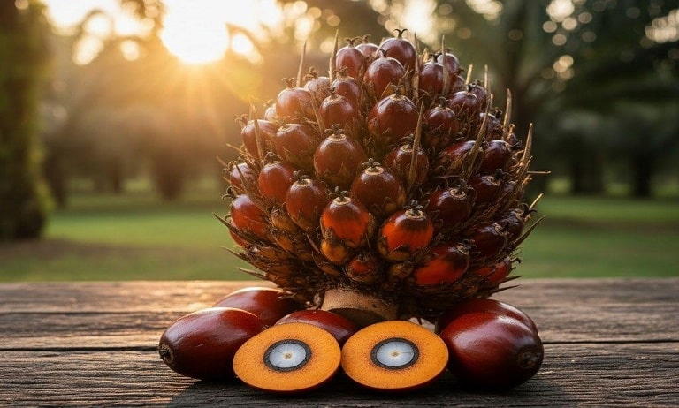

1990-an
Tahun Berdiri & Beroperasi
Ribuan Ha
Lahan Perkebunan Produktif
CPO & PK
Produk Olahan Utama
RSPO / ISPO
Komitmen Keberlanjutan
Tumbuh Bersama Masyarakat Aceh Singkil
PT Nafasindo adalah perusahaan agribisnis terkemuka yang bergerak di bidang perkebunan dan pengolahan kelapa sawit di Kecamatan Kota Baharu, Kabupaten Aceh Singkil, Provinsi Aceh. Kami mengelola perkebunan dan Pabrik Kelapa Sawit secara terpadu demi menjaga standar mutu produk yang tinggi.
- Pengelolaan kebun dan pabrik terpadu berbasis efisiensi
- Kemitraan terbuka bagi kelompok tani dan petani swadaya
- Penerapan standar Keselamatan dan Kesehatan Kerja serta kelestarian lingkungan hidup
PRODUK UTAMA
Hasil Olahan Kelapa Sawit Berstandar Mutu Tinggi

Minyak Sawit Mentah (CPO)
Minyak sawit mentah berkadar asam lemak bebas rendah hasil ekstraksi daging buah sawit pilihan untuk bahan baku minyak goreng dan industri oleokimia.

Inti Sawit (Palm Kernel)
Inti sawit bermutu unggul sebagai bahan baku ekstraksi minyak inti sawit dan pakan ternak berkualitas tinggi.

Tandan Buah Segar (TBS)
Hasil panen kebun inti dan kemitraan petani swadaya yang disortir secara ketat berdasarkan tingkat kematangan buah.
STRUKTUR ORGANISASI PABRIK
Jajaran Manajemen & Fungsional Pabrik Kelapa Sawit PT Nafasindo

Bambang Sutarjo
Manajer Pabrik
Memimpin seluruh aktivitas operasional pabrik, pengolahan TBS, serta kepatuhan keselamatan kerja & mutu.

Doni Aditya
Masinis Kepala (MASKEP)
Mengawasi Asisten Proses Shift 1 & 2, Asisten Bengkel, serta pemeliharaan mesin pabrik.

Nur Indah
Kepala Tata Usaha (KTU & SDM)
Mengelola administrasi keuangan, tata usaha, kepegawaian, dan hubungan sumber daya manusia.
Nadim Wiyoko
Asisten Lab & Pengendali Mutu
Mengawasi Mandor Sortasi dan Mandor Laboratorium untuk menjaga kontrol mutu produk.

Klik tombol di atas untuk membuka skema bagan organisasi pabrik secara penuh.
PETA LOKASI PERUSAHAAN
Wilayah Operasional PT Nafasindo di Aceh Singkil